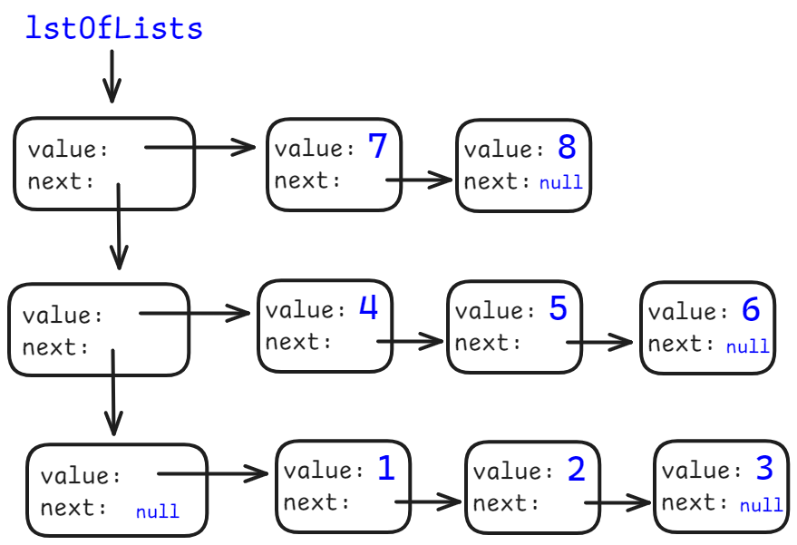

<meta charset="utf-8" />
<style> hint, drill {display: none;} </style>
<script src="../md-components.js"></script>

<import-hints from="./java-hints.html"></import-hints>

<!---------------------------------------------------------->

<code-drills
    heading="Linked list"
    log-level="W"
>
</code-drills>

<!---------------------------------------------------------->

<drill lang="java" id="list">
Integer[] numbers = new Integer[] {1, 2, 3, 4, 5};

$Node$$&lt;Integer>$ l1 = listFromArray(numbers);       {1}
    ~r hr generic-type
    ^$
$Node$$&lt;Integer>$ l2 = listFromArray(numbers);       {1}
    ~r hr generic-type
    ^$

print(l1);          // [1, 2, 3, 4, 5]
print(l2);          // [1, 2, 3, 4, 5]
print(l1 == l2);    // $false$
    ^? ~g ht result

l1.getNext().getNext().getNext().setNext(l2.getNext());

print(l1);          // $[1, 2, 3, 4, 2, 3, 4, 5]$
    ^? ~g ht result
$!html:w-h-r+ 
print(l2);          // $[1, 2, 3, 4, 5]$   
    ^? ~g ht result
</drill>


<!---------------------------------------------------------->

<drill lang="java" id="getCount()">
pubic static int getCount(Node&lt;Integer> lst) {
    int count = 0;
    $Node$$&lt;Integer>$ node = lst;
        ~r hr generic-type
        ^$
    while (node != null) {
        count++;
        node = node.$getNext$$()$;
            ~r ht func-call
            ^$
    }
    return count;
}
</drill>

<!---------------------------------------------------------->

<drill lang="java" id="getMax()">
public static int getMaxValue(Node&lt;Integer> lst) {
    int max = Integer.MIN_VALUE;
    while (lst != $null$) {
            ^... ~o ht implement
        max = Math.max(max, $lst$$.getValue()$);
            ~r ht node-not-value
            ^$
        lst = lst.getNext();
    }
    return max;
}

public static NodecInteger> getMaxNode(Node&lt;Integer> lst) {
    $Node$$&lt;Integer>$ max = lst$$;
        ~r hr generic-type
        ^$
        ^.getValue() ~r ht value-not-node       {+}
    while ($lst != null$) {
            ^... ~o ht implement
        if (lst.getValue() > $max$$.getValue()$) {
                ~r ht node-not-value
                ^$
            max = lst;
        }
        lst = lst.getNext();
    }
-    return max;        {1}
$} $                    {1}
    ~r ht return-is-missing

print(getMaxValue(null));       // $-2147483648$
    ^? ~g ht result
print(getMaxNode(null));        // $null$
    ^? ~g ht result
</drill>

<!---------------------------------------------------------->

<drill lang="java" id="findNode()">
public static Node&lt;Integer> findNode($Node$$&lt;Integer>$ node, int value) {
        ~r hr generic-type
        ^$
    while (node != null) {
        if (value $==$ node.getValue()) {
                ^= ~r ht assign-vs-comp
            return node;
        }
        node = node.$getNext$$()$;
            ~r ht func-call
            ^$
    }
-    return null;       {1}
$} $                    {1}
    ~r ht return-is-missing

Node&lt;Integer> list = listFromArray(new Integer[] {1, 2, 3, 4, 5});
Node&lt;Integer> node = findNode(list, 3);

print(list);        // [1, 2, 3, 4, 5] 
print(node);        // $[3, 4, 5] - Why three number?$
    ^? ~g ht result

node.setNext(null);

print(node);        // $[3]$
    ^? ~g ht result
print(list);        // $[1, 2, 3] - Where are numbers [4, 5]?$
    ^? ~g ht result
</drill>

<!---------------------------------------------------------->

<drill lang="java" id="endless-list">
Node&lt;Integer> l1 = listFromArray(new Integer[] {1, 2, 3, 4, 5});

l1.getNext().getNext().getNext().setNext(l1.getNext());
print(l1);      // $❌ Runtime crash!!! Endless linked list$
    ^? ~g ht result
$!html:w-h-r+ 
</drill>

<!---------------------------------------------------------->

<drill lang="java" id="addToAllNodes()">
public static $void $$addToAllNodes$($Node$$&lt;Integer>$ node, int num) {
        ^$
        ~r hb return-type
        ~r hr generic-type  {+}
        ^$
    while (node != null) {
        node.$setValue$$($node.getValue() + num$)$;
            ~r ht func-call
            ^ = $ ~t
            ^$
-        node = node.getNext();     {1}
    $} $                            {1}
        ~r ht endless-loop
}

Node&lt;Integer> lst = listFromArray(new int[] {1, 2, 3, 4, 5});

addToAllNodes(lst, 100);
print(list);                // $[101, 102, 103, 104, 105]$ 
    ^? ~g ht result
</drill>

<!---------------------------------------------------------->

<drill lang="java" id="same()" no-wrong-phase>
public static boolean same(Node&lt;Integer> a, Node&lt;Integer> b) {
    while ($a != null$ $&&$ $b != null$) {
            ^... ~o ht complete
            ^... ~o ht complete
            ^... ~o ht complete
        if (a.getValue() $!=$ b.getValue()) {
                ^... ~o ht complete
            $return false;$
                ^... ~o ht complete
        }
        $a = a.getNext();$              {1}
            ^... ~o ht complete
        $b = b.getNext();$
            ^... ~o ht complete         {1}
    }
    return $a == null$ $&&$ $b == null$;
        ^... ~o ht complete
        ^... ~o ht complete
        ^... ~o ht complete
}
</drill>

<!---------------------------------------------------------->

<drill lang="java" id="add-to-list">
public static Node addToHead(Node&lt;Integer> lst, int value) {
    $return $new $Node$$&lt;Integer>$(value, lst);
        ^$ ~t                   {1}
        ~r ht generic-type      {+}
        ^$
$} $                            {1}!
    ~r hr return-is-missing

public static Node&lt;Integer> addToTail(Node&lt;Integer> lst, int value) {
    $Node$$&lt;Integer>$ node = new $Node$$&lt;Integer>$(value, null);  {3}
        ~r ht generic-type
        ^$ ~t
        ~r ht generic-type
        ^$ ~t
-    if (lst == null) {         {2}
-        return node;           {2}
-    }                          {2}
    $Node$$&lt;Integer>$ tail = $lst$;
        ~r ht generic-type                  {3}
        ^$ ~t                               {3}
        ~r ht list-can-be-empty             {2}!
    while ($tail$$.getNext()$ != null) {
            ~r ht list-end-or-last
            ^$
        tail = tail.getNext();
    }
-    tail.setNext(node);            {4}
    $return$ $lst$;
        ~r hr מצאנו סוף ומה?..      {4}
        ^node ~r hr is-it-first-node    {+}
}
</drill>

<!---------------------------------------------------------->

<drill lang="java" id="addToSorted()">
public static Node&lt;Integer> addToSorted(Node&lt;Integer> lst, int value) {
    Node$&lt;$$Integer$$>$ node = new Node$&lt;$$>$(value, null);
        ~r hr generic-type
        ^$
        ~r hr generic-type
        ~o hr generic-with-omitted-type          {+}
        ~o hr generic-with-omitted-type
-    if (lst == null) {                         {2}
-        return node;                           {2}
-    }                                          {2}
    if (value $<$ $lst$.getValue()) {
            ^> ~r ht wrong-logic
            ~r ht list-can-be-empty             {2}!
        node.setNext(lst);
        return $node$;
            ^lst ~r hr is-it-first-node
    }
    Node&lt;Integer> prev = lst;
    while ($prev.hasNext() && $prev$.getNext()$.$getValue() < value$) {
            ^$ ~t                               {3}
            ^$ ~t                               {+}
            ~r ht prev-is-wanted
        prev = $prev$.getNext();
            ~r hb next-can-be-null              {3}!
    }
    node.setNext($prev.getNext()$);
        ^... ~o ht complete
    prev.setNext($node$);
        ^... ~o ht complete
    return $lst$;
        ^node ~r hr is-it-first-node
}
</drill>

<!---------------------------------------------------------->

<drill lang="java" id="value-at-index">
public static int valueAt(Node&lt;Integer> lst, int i) {
    Node&lt;Integer> node = $$lst$$;
        ^new Node($ ~r ht reference-itr
        ^)
    while (node $!= null$ && $i > 0$) {
            ^... ~o ht complete
            ^... ~o ht complete     {+}
        node = node.getNext();
        i--;
    }
    return node == null ? 0 : $node$$.getValue()$;
        ~r ht wrong-ret-value
        ^$
}

public static Node&lt;Integer> nodeAt(Node&lt;Integer> lst, int i) {
    Node&lt;Integer> node = lst;
    while (node != null$ && i > 0$) {   {2}
            ^$
        node = node.getNext();
        $i--$;                          {2}
            ~r hr when-its-over
    }
    return node$$;
        ^.getValue() ~r ht wrong-ret-value
}
</drill>

<!---------------------------------------------------------->

<drill lang="java" id="getMiddleNode()" todo>
Node getMiddleNode(Node lst) {
    Node slow = lst;
    Node fast = lst;
    while (fast != null && fast.hasNext()) {
        slow = slow.getNext();
        fast = fast.getNext().getNext();
    }
    return slow;
}
</drill>

<!---------------------------------------------------------->

<drill lang="java" id="ascending()" todo>
boolean ascending(Node lst) {
    if (lst == null || lst.getNext() == null) {
        return true;
    }
    Node node = lst;
    while (node.hasNext()) {
        if (node.getValue() > node.getNext().getValue()) {
            return false;
        }
        node = node.getNext();
    }
    return true;
}
</drill>

<!---------------------------------------------------------->

<drill lang="java" id="same-as-array" todo>
boolean areSame(Node lst, int[] a) {
    Node node = lst;
    int i = 0;
    while (node != null && i < a.length) {
        if (node.getValue() != a[i]) {
            return false;
        }
        node = node.getNext();
        i++;
    }
    return node == null && i == a.length;
}
</drill>


<!---------------------------------------------------------->

<drill lang="java" id="findByName()" todo>
Node<Person> find(Node<Person> lst, String name) {
    while (lst != null) {
        if (lst.getValue().getName().equals(name)) {
            return lst;
        }
        lst = lst.getNext();
    }
    return null;
}
</drill>

<!---------------------------------------------------------->

<drill lang="java" id="copy()" todo>
Node deepCopy(Node<Person> lst) {
    if (lst == null) {
        return null;
    }
    Node lst2 = new Node(lst.getValue(), null);
    Node tail2 = lst2;
    Node node = lst.getNext();
    while (node != null) {
        Node node2 = new Node(node.getValue(), null);
        tail2.setNext(node2);
        tail2 = node2;
        node = node.getNext();
    }
    return lst2;
}
</drill>

<!---------------------------------------------------------->

<drill lang="java" id="reverse" todo>
Node reversedCopy(Node lst) {
    Node rev = null;
    while (lst != null) {
        rev = new Node(lst.getValue(), rev);
        lst = lst.getNext();
    }
    return rev;
}

Node reverse(Node lst) {
    Node rev = null;
    while (lst != null) {
        Node node = lst;
        lst = lst.getNext();
        node.setNext(rev);
        rev = node;
    }
    return rev;
}
</drill>

<!---------------------------------------------------------->

<drill lang="java" id="removeNode()" todo>
Node removeNode(Node lst, Node node) {
    if (lst == null) {
        return null;
    }
    if (lst == node) {
        return lst.getNext();
    }
    Node prev = lst;
    while (prev.hasNext() && prev.getNext() != node) {
        prev = prev.getNext();
    }
    if (prev.hasNext()) {
        prev.setNext(prev.getNext().getNext());
    }
    return lst;
}
</drill>

<!---------------------------------------------------------->

<drill lang="java" id="removeAt()" todo>
Node removeAt(Node lst, int i) {
    if (lst == null) {
        return null;
    }
    if (i == 0) {
        return lst.getNext();
    }
    Node prev = lst;
    while (prev.hasNext() && i != 1) {
        prev = prev.getNext();
        i--;
    }
    if (prev.hasNext()) {
        prev.setNext(prev.getNext().getNext());
    }
    return lst;
}
</drill>

<!---------------------------------------------------------->

<drill lang="java" id="removeAll()!" no-wrong-phase>
$!html:w-h-r+ 
public static Node&lt;Integer> removeAll(Node&lt;Integer> lst, int value) {
    // $מוחקים את הצמתים בראש הרשימה$
            ^... ~o ht implement
    while ($lst$ != null && $lst.getValue()$ == value) {
            ^... ~o ht implement
            ^... ~o ht implement    {+}
        lst = lst.getNext();
    }
    // <bdo dir="rtl">?מה אם מחקנו הכול</bdo>
-    if (lst == null) {             {1}
-        return null;               {1}
-    }                              {1}
+   $...$                           {1}
        ~o ht implement
    // $מוחקים מאמצע של רשימה$
            ^... ~o ht implement
    Node&lt;Integer> prev = lst;
    while (prev.hasNext()) {
        if ($prev.getNext().getValue()$ == value) {
                ^... ~o ht implement
            prev.setNext($prev.getNext().getNext()$);
                ^... ~o ht implement
        } else {
            $prev = prev.getNext();$
                ^... ~o ht implement
        }
    }
    return $lst$;
        ^... ~o ht implement
}
</drill>

<!---------------------------------------------------------->

<drill lang="java" id="merge-sorted-lists" todo>
// [1,4,5,7] ⊕ [2,3,6,8] => [1,2,3,4,5,6,7,8]  
// [1,4,5,7] ⊕ [2,3]     => [1,2,3,4,5,7]  
public static Node&lt;Integer> merge(Node&lt;Integer> a, Node&lt;Integer> b) {
    Node&lt;Integer> lst = null;
    Node&lt;Integer> tail = null;
    while (a != null || b != null) {
        boolean nextIsA = true;
        if (a == null) {
            nextIsA = false;
        } else {
            if (b != null && b.getValue() < a.getValue()) {
                nextIsA = false;
            }
        }
        if (nextIsA) {
            if (lst == null) {
                lst = a;
                tail = a;
                a = a.getNext();
            } else {
                tail.setNext(a);
                tail = a;
                a = a.getNext();
            }
        } else {
            if (lst == null) {
                lst = b;
                tail = b;
                b = b.getNext();
            } else {
                tail.setNext(b);
                tail = b;
                b = b.getNext();
            }
        }
    }
    return lst;
}
</drill>

<!---------------------------------------------------------->

<drill lang="java" id="remove-point" todo>
Node<Point> remove(Node<Point> lst, Point pnt) {
    if (lst == null || pnt == null) {
        return lst;
    }
    Point current = lst.getValue();
    if (current != null && current.same(pnt)) {
        return lst.getNext();
    }
    Node<Point> prev = lst;
    Node<Point> node = lst.getNext();
    while (node != null) {
        current = node.getValue();
        if (current != null && current.same(pnt)) {
            prev.setNext(node.getNext());
            return lst;
        }
        prev = node;
        node = node.getNext();
    }
    return lst;
}
</drill>

<!---------------------------------------------------------->

<drill lang="java" id="slice">
// מקבל רשימה ומחזיר רשימה של רשימות
// x כאשר כל רשימה היא בעורך של
// רשימה אחת יכולה להיות קצהרה יותר
public static $Node&lt;Node&lt;Integer>> $$slice$(Node&lt;Integer> lst, int x) {
        ^$
        ~r ht return-type
-    if (lst == null) {         {1}
-        return null;           {1}
-    }                          {1}
    Node&lt;Node&lt;Integer>> lstOfLists = new Node&lt;Node&lt;Integer>>($lst$); {1}!
        ~r ht list-can-be-empty
    Node&lt;Integer> tail = null;
    while (lst != null) {
        for (int i = 0; i < x$ && lst != null$; i++) {
                ^$ ~t               {3} 
            tail = lst;
            lst = $lst$.getNext();
                ~r hr can-be-null   {3}
        }
-        if (lst != null) {             {4}
-4          tail.setNext($null$);         {4}
                ^... ~o hr complete       {+}
-4          lstOfLists = new Node&lt;Node&lt;Integer>>($lst$, $lstOfLists$);  {4}
                ~r ht can-be-null   {4}
                ^... ~o hr complete       {+}
-        }                              {4}
    }
    return lstOfLists;
}

var lst = listFromArray(new Integer[]{1,2,3,4,5,6,7,8});
var lstOfLists = slice(lst, 3);
$!html:w-h-r+    {2}
while (lstOfLists != null) {                // $[7, 8]$     {2}
        ^? ~g ht result
    print(lstOfLists.getValue());           // $[4, 5, 6]$  {2}
        ^? ~g ht result
    lstOfLists = lstOfLists.getNext();      // $[1, 2, 3]$  {2}
        ^? ~g ht result
}
</drill>

<!---------------------------------------------------------->

<drill lang="java" id="countWords()" todo>
Node<Counter> countWords(String[] words) {
    ...
}
</drill>

<!---------------------------------------------------------->

